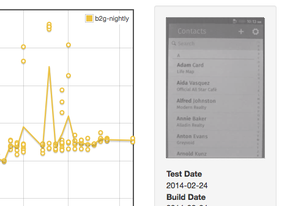

Over the past four decades, researches have found consistently that an interactive system's responsiveness [...] is the most important factor in determining user satisfaction.
On every device. Seriously.
Use 3rd party services, crowdsourcing, etc.
Extreme variability across the stack.
First paint - 100ms
Interactive - 1s
Full load - variable
Especially important in low-memory devices
Event loop lag
Gecko runs event handlers *to completion*
Handlers taking >16ms means skipped frames
Which means painting at <60fps
Very important due to low-cost devices.
Launch devices had 256mb RAM (ouch)
$25 device has 128mb RAM (!!!)
Web content runs hot
Cheap batteries
Over invalidation
Wasteful layer trees
Excess layer creation/destruction
A lot of options here
Gaia make target
App start
App ready
Custom tests
./profile.sh start -p b2g -i 10 && ./profile.sh start -p Settings
High speed camera
Valgrind
Systrace
b2g-info